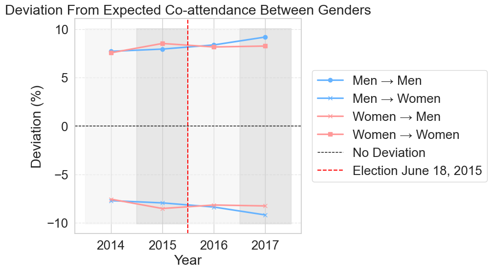
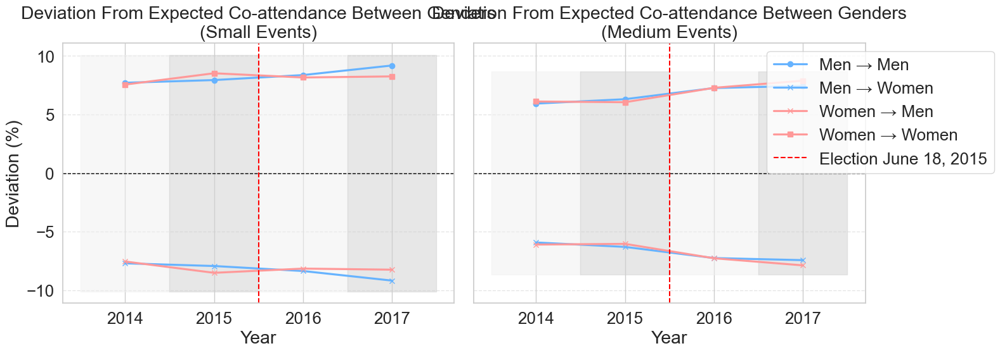
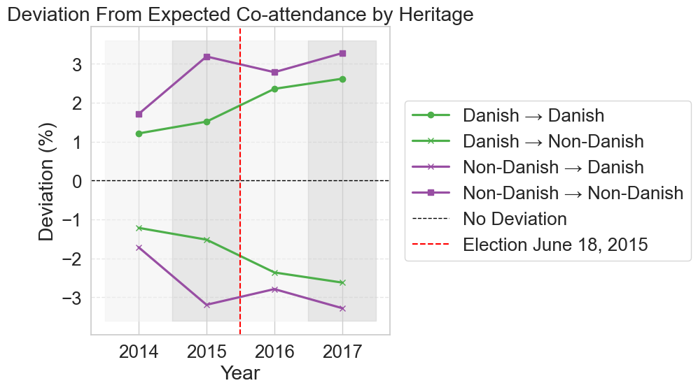
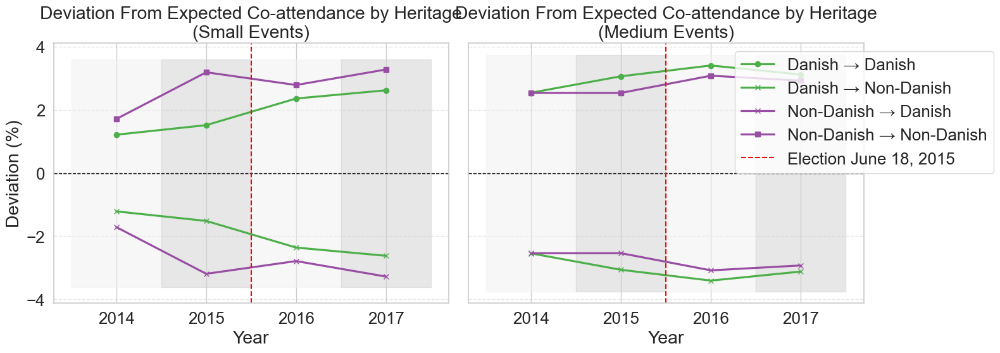
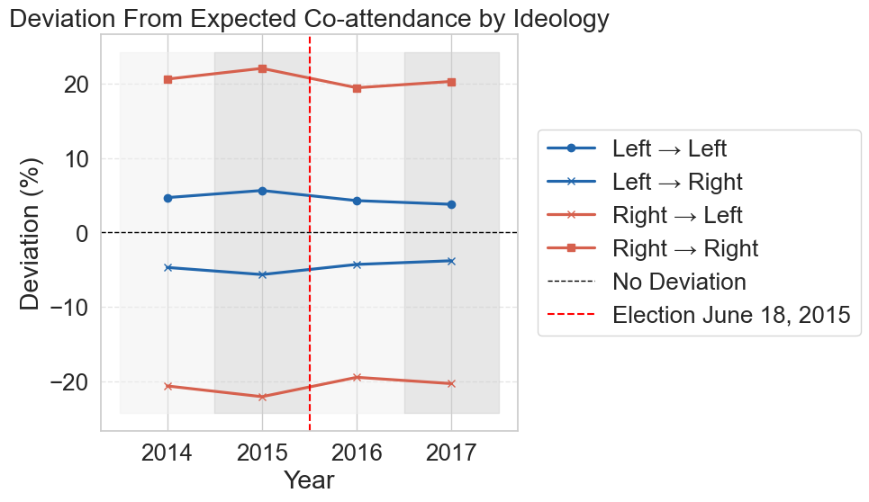
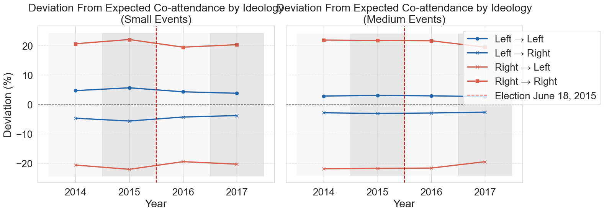

Notebook 4: Demographic Mixing Analysis#
Measures homophily in co-attendance across three demographic dimensions — gender, heritage, and political ideology — by comparing observed co-attendance patterns in user-user networks against proportional mixing baselines.
Inputs from ../data/processed/:
user_graph_{key}.pkl— user-user LCC graphsfiltered_users_{key}.pkl— user DataFrames (connected to event-event LCC)filtered_events_{key}.pkl— event DataFrames (LCC only)
Outputs (displayed inline):
Tables E.3, E.4, E.5 — deviation statistics for ideology, heritage, and gender
Figures 7.3, 7.4, 7.5 — deviation from expected co-attendance (small events)
Figures E.1, E.2, E.3 — side-by-side small and medium event comparison
Pipeline
Compute expected co-attendance percentages (proportional baseline)
Compute observed co-attendance for each demographic group (edge-weight-aware)
Calculate deviations from expected
Produce deviation tables and plots for gender, heritage, and political ideology
import pickle
import re
from pathlib import Path
import matplotlib.pyplot as plt
import networkx as nx
import numpy as np
import pandas as pd
import seaborn as sns
sns.set_theme(rc={"lines.linewidth": 2.3}, font_scale=1.7)
sns.set_style("whitegrid")
DATA_DIR = Path('../data/processed')
KEYS = [
'small_2013-2014', 'small_2014-2015', 'small_2015-2016', 'small_2016-2017',
'medium_2013-2014', 'medium_2014-2015', 'medium_2015-2016', 'medium_2016-2017',
]
YEARS = np.array([2014, 2015, 2016, 2017])
ELECTION_YEAR = 2015.5
SHADING_RANGES = [2013.5, 2014.5, 2015.5, 2016.5, 2017.5]
SHADES = ["#f0f0f0", "#d0d0d0"]
1. Load Inputs#
def load_pkl(path):
with open(path, 'rb') as f:
return pickle.load(f)
user_graphs = {k: load_pkl(DATA_DIR / f'user_graph_{k}.pkl') for k in KEYS}
filtered_users = {k: pd.read_pickle(DATA_DIR / f'filtered_users_{k}.pkl') for k in KEYS}
filtered_events= {k: pd.read_pickle(DATA_DIR / f'filtered_events_{k}.pkl') for k in KEYS}
print("Loaded all inputs.")
for k in KEYS:
G = user_graphs[k]
print(f" {k}: {G.number_of_nodes():,} users, {G.number_of_edges():,} edges")
Loaded all inputs.
small_2013-2014: 62,534 users, 867,261 edges
small_2014-2015: 72,066 users, 1,038,418 edges
small_2015-2016: 99,209 users, 1,484,858 edges
small_2016-2017: 113,432 users, 1,676,789 edges
medium_2013-2014: 126,726 users, 7,463,539 edges
medium_2014-2015: 150,725 users, 9,522,664 edges
medium_2015-2016: 189,586 users, 12,445,290 edges
medium_2016-2017: 192,082 users, 11,783,419 edges
2. Expected Co-attendance Baselines#
The baseline for each attribute is the share of events attended by each group, computed from all users connected to the event-event LCC. This serves as the proportional mixing null — if attendees mixed randomly, co-attendance would reflect these shares.
def compute_baselines(users_df):
"""Compute expected co-attendance percentages for gender, heritage, and ideology.
Expected % = share of events attended by each group (weighted by events_attended).
Excludes unlabelled users from the denominator.
"""
df = users_df.copy().fillna({
'gender_label': 'no-gender',
'heritage_label': 'no-heritage',
})
df['l_r_min_max'] = df['l_r_min_max'].fillna('Non-political')
def pct_by_group(label_col, positive_labels):
totals = {
lbl: df.loc[df[label_col] == lbl, 'events_attended'].sum()
for lbl in positive_labels
}
grand = sum(totals.values())
return {lbl: (v / grand * 100 if grand > 0 else 0.0) for lbl, v in totals.items()}
return {
'gender': pct_by_group('gender_label', ['M', 'F']),
'heritage': pct_by_group('heritage_label', ['Danish', 'Non-Danish']),
'ideology': pct_by_group('l_r_min_max', ['L', 'R']),
}
baselines = {k: compute_baselines(filtered_users[k]) for k in KEYS}
# Spot-check
print("Baselines for small_2013-2014:")
for dim, vals in baselines['small_2013-2014'].items():
print(f" {dim}: {vals}")
Baselines for small_2013-2014:
gender: {'M': np.float64(45.77278731836196), 'F': np.float64(54.22721268163805)}
heritage: {'Danish': np.float64(60.03350083752094), 'Non-Danish': np.float64(39.96649916247906)}
ideology: {'L': np.float64(82.15410385259632), 'R': np.float64(17.845896147403685)}
3. Observed Co-attendance#
For each labelled user in the user-user LCC, we examine their ego network: the neighbours they are connected to, weighted by edge weight (number of co-attended events). We record the fraction of each user’s labelled neighbours belonging to each group, then average across users within each group.
Deviation = Observed % − Expected %
def compute_mixing_stats(user_graph, users_df, attribute, group_labels):
"""Compute observed co-attendance stats for one demographic attribute.
Uses a pre-computed dict for O(1) attribute lookups to keep the inner
loop fast even on graphs with millions of edges.
Returns a dict keyed by group label containing mean observed %s per
neighbour group.
"""
valid_set = set(group_labels)
# Pre-build attribute map — only include users with a valid (non-null) label
attr_series = users_df[['hashed_id', attribute]].dropna(subset=[attribute])
attr_map = dict(zip(attr_series['hashed_id'], attr_series[attribute]))
# Filter to only labelled groups (e.g. drop 'Non-political' from ideology)
attr_map = {uid: lbl for uid, lbl in attr_map.items() if lbl in valid_set}
group_results = {lbl: [] for lbl in group_labels}
for user in user_graph.nodes():
ego_label = attr_map.get(user)
if ego_label is None:
continue
counts = {lbl: 0.0 for lbl in group_labels}
for neighbour, edge_data in user_graph[user].items():
nb_label = attr_map.get(neighbour)
if nb_label is not None:
counts[nb_label] += edge_data.get('weight', 1)
total = sum(counts.values())
if total == 0:
continue
obs = {lbl: counts[lbl] / total * 100 for lbl in group_labels}
obs['total_neighbours'] = total
group_results[ego_label].append(obs)
summary = {}
for ego_lbl in group_labels:
rows = pd.DataFrame(group_results[ego_lbl])
if rows.empty:
summary[ego_lbl] = {f'obs_{lbl} (%)': np.nan for lbl in group_labels}
else:
entry = {f'obs_{lbl} (%)': rows[lbl].mean() for lbl in group_labels}
entry['avg_total_neighbours'] = rows['total_neighbours'].mean()
summary[ego_lbl] = entry
return summary
DIMENSIONS = {
'gender': ('gender_label', ['M', 'F']),
'heritage': ('heritage_label', ['Danish', 'Non-Danish']),
'ideology': ('l_r_min_max', ['L', 'R']),
}
mixing_stats = {}
for key in KEYS:
print(f"{key}...")
mixing_stats[key] = {}
for dim, (col, labels) in DIMENSIONS.items():
mixing_stats[key][dim] = compute_mixing_stats(
user_graphs[key], filtered_users[key], col, labels
)
print(f" done")
small_2013-2014...
done
small_2014-2015...
done
small_2015-2016...
done
small_2016-2017...
done
medium_2013-2014...
done
medium_2014-2015...
done
medium_2015-2016...
done
medium_2016-2017...
done
4. Build Deviation Tables#
Tables E.3 (ideology), E.4 (heritage), E.5 (gender).
def build_deviation_table(dimension, ego_labels, obs_labels, baseline_keys):
"""Build a deviation DataFrame for one demographic dimension.
Args:
dimension: 'gender', 'heritage', or 'ideology'
ego_labels: the groups whose ego networks we examine, e.g. ['M','F']
obs_labels: the neighbour groups we measure, same as ego_labels
baseline_keys: the keys in baselines[key][dimension] to pull expected %s
"""
rows = []
for size in ['Small', 'Medium']:
for period in ['2013-2014', '2014-2015', '2015-2016', '2016-2017']:
key = f'{size.lower()}_{period}'
stats = mixing_stats[key][dimension]
bl = baselines[key][dimension]
for ego_lbl in ego_labels:
row = {
'Event Size': size, 'Time Period': period, 'Group': ego_lbl,
}
for obs_lbl, bl_key in zip(obs_labels, baseline_keys):
expected = bl.get(bl_key, np.nan)
observed = stats.get(ego_lbl, {}).get(f'obs_{obs_lbl} (%)', np.nan)
row[f'Deviation {obs_lbl} (pp)'] = round(observed - expected, 2) if not np.isnan(observed) else np.nan
row[f'Expected {obs_lbl} (%)'] = round(expected, 2)
rows.append(row)
return pd.DataFrame(rows)
table_e5 = build_deviation_table('gender', ['M', 'F'], ['M', 'F'], ['M', 'F'])
table_e4 = build_deviation_table('heritage', ['Danish', 'Non-Danish'],['Danish', 'Non-Danish'],['Danish', 'Non-Danish'])
table_e3 = build_deviation_table('ideology', ['L', 'R'], ['L', 'R'], ['L', 'R'])
print("Table E.5 — Gender co-attendance deviation:")
print(table_e5.to_string(index=False))
Table E.5 — Gender co-attendance deviation:
Event Size Time Period Group Deviation M (pp) Expected M (%) Deviation F (pp) Expected F (%)
Small 2013-2014 M 7.71 45.77 -7.71 54.23
Small 2013-2014 F -7.55 45.77 7.55 54.23
Small 2014-2015 M 7.94 43.61 -7.94 56.39
Small 2014-2015 F -8.52 43.61 8.52 56.39
Small 2015-2016 M 8.37 42.49 -8.37 57.51
Small 2015-2016 F -8.16 42.49 8.16 57.51
Small 2016-2017 M 9.18 42.73 -9.18 57.27
Small 2016-2017 F -8.25 42.73 8.25 57.27
Medium 2013-2014 M 5.93 45.60 -5.93 54.40
Medium 2013-2014 F -6.11 45.60 6.11 54.40
Medium 2014-2015 M 6.31 44.28 -6.31 55.72
Medium 2014-2015 F -6.05 44.28 6.05 55.72
Medium 2015-2016 M 7.26 43.93 -7.26 56.07
Medium 2015-2016 F -7.28 43.93 7.28 56.07
Medium 2016-2017 M 7.44 44.22 -7.44 55.78
Medium 2016-2017 F -7.88 44.22 7.88 55.78
print("Table E.4 — Heritage co-attendance deviation:")
print(table_e4.to_string(index=False))
Table E.4 — Heritage co-attendance deviation:
Event Size Time Period Group Deviation Danish (pp) Expected Danish (%) Deviation Non-Danish (pp) Expected Non-Danish (%)
Small 2013-2014 Danish 1.21 60.03 -1.21 39.97
Small 2013-2014 Non-Danish -1.71 60.03 1.71 39.97
Small 2014-2015 Danish 1.52 59.95 -1.52 40.05
Small 2014-2015 Non-Danish -3.19 59.95 3.19 40.05
Small 2015-2016 Danish 2.36 59.30 -2.36 40.70
Small 2015-2016 Non-Danish -2.79 59.30 2.79 40.70
Small 2016-2017 Danish 2.62 58.10 -2.62 41.90
Small 2016-2017 Non-Danish -3.28 58.10 3.28 41.90
Medium 2013-2014 Danish 2.54 58.68 -2.54 41.32
Medium 2013-2014 Non-Danish -2.54 58.68 2.54 41.32
Medium 2014-2015 Danish 3.06 57.67 -3.06 42.33
Medium 2014-2015 Non-Danish -2.54 57.67 2.54 42.33
Medium 2015-2016 Danish 3.41 56.53 -3.41 43.47
Medium 2015-2016 Non-Danish -3.08 56.53 3.08 43.47
Medium 2016-2017 Danish 3.12 56.64 -3.12 43.36
Medium 2016-2017 Non-Danish -2.93 56.64 2.93 43.36
print("Table E.3 — Ideological co-attendance deviation:")
print(table_e3.to_string(index=False))
Table E.3 — Ideological co-attendance deviation:
Event Size Time Period Group Deviation L (pp) Expected L (%) Deviation R (pp) Expected R (%)
Small 2013-2014 L 4.70 82.15 -4.70 17.85
Small 2013-2014 R -20.63 82.15 20.63 17.85
Small 2014-2015 L 5.65 80.66 -5.65 19.34
Small 2014-2015 R -22.07 80.66 22.07 19.34
Small 2015-2016 L 4.29 81.71 -4.29 18.29
Small 2015-2016 R -19.46 81.71 19.46 18.29
Small 2016-2017 L 3.79 82.06 -3.79 17.94
Small 2016-2017 R -20.31 82.06 20.31 17.94
Medium 2013-2014 L 2.84 83.11 -2.84 16.89
Medium 2013-2014 R -21.88 83.11 21.88 16.89
Medium 2014-2015 L 3.08 82.59 -3.08 17.41
Medium 2014-2015 R -21.75 82.59 21.75 17.41
Medium 2015-2016 L 2.92 82.81 -2.92 17.19
Medium 2015-2016 R -21.64 82.81 21.64 17.19
Medium 2016-2017 L 2.65 82.08 -2.65 17.92
Medium 2016-2017 R -19.48 82.08 19.48 17.92
5. Plotting Functions#
Each plot shows the deviation from expected co-attendance over time. A positive deviation means a group co-attends with its own group more than chance would predict (homophily). A negative deviation means under-representation.
def year_from_key(key):
m = re.search(r'(\d{4})-(\d{4})', key)
return int(m.group(2)) if m else None
def extract_series(dimension, ego_label, dev_col, size_label):
"""Return (years, deviations) for a given group and event size."""
pts = []
for key in KEYS:
if not key.startswith(size_label):
continue
year = year_from_key(key)
stats = mixing_stats[key][dimension]
bl = baselines[key][dimension]
obs_lbl, bl_key = dev_col
expected = bl.get(bl_key, np.nan)
observed = stats.get(ego_label, {}).get(f'obs_{obs_lbl} (%)', np.nan)
dev = observed - expected if not np.isnan(observed) else np.nan
pts.append((year, dev))
pts.sort()
return np.array([p[0] for p in pts]), np.array([p[1] for p in pts])
def add_shading(ax, y_min, y_max):
for i in range(len(SHADING_RANGES) - 1):
ax.fill_betweenx([y_min, y_max], SHADING_RANGES[i], SHADING_RANGES[i+1],
color=SHADES[i % 2], alpha=0.5)
def plot_deviation_side_by_side(dimension, series_spec, title_prefix, filename):
"""Plot small and medium event deviation side by side.
series_spec: list of (ego_label, (obs_col, bl_key), color, marker, line_label)
"""
fig, axs = plt.subplots(1, 2, figsize=(16, 6), sharey=True)
for ax, size_label, subtitle in zip(axs, ['small', 'medium'], ['Small Events', 'Medium Events']):
all_y = []
for ego_lbl, dev_col, color, marker, label in series_spec:
xs, ys = extract_series(dimension, ego_lbl, dev_col, size_label)
all_y.extend(ys[~np.isnan(ys)])
if not all_y:
continue
y_min = min(all_y) * 1.1
y_max = max(all_y) * 1.1
add_shading(ax, y_min, y_max)
for ego_lbl, dev_col, color, marker, label in series_spec:
xs, ys = extract_series(dimension, ego_lbl, dev_col, size_label)
ax.plot(xs, ys, marker=marker, color=color, label=label)
ax.axhline(y=0, color='black', linewidth=1, linestyle='--')
ax.axvline(x=ELECTION_YEAR, color='red', linestyle='--', linewidth=1.5,
label='Election June 18, 2015')
ax.set_xticks(YEARS)
ax.set_xlabel('Year')
ax.set_title(f'{title_prefix}\n({subtitle})')
ax.grid(axis='y', linestyle='--', alpha=0.5)
axs[0].set_ylabel('Deviation (%)')
axs[1].legend(loc='upper right', bbox_to_anchor=(1.35, 1))
plt.tight_layout()
plt.savefig(DATA_DIR / filename, dpi=150, bbox_inches='tight')
plt.show()
def plot_deviation_single(dimension, series_spec, title, size_label, filename):
"""Plot deviation for a single event size (used for the main-text figures)."""
fig, ax = plt.subplots(figsize=(10, 6))
all_y = []
for ego_lbl, dev_col, color, marker, label in series_spec:
xs, ys = extract_series(dimension, ego_lbl, dev_col, size_label)
all_y.extend(ys[~np.isnan(ys)])
if not all_y:
return
y_min = min(all_y) * 1.1
y_max = max(all_y) * 1.1
add_shading(ax, y_min, y_max)
for ego_lbl, dev_col, color, marker, label in series_spec:
xs, ys = extract_series(dimension, ego_lbl, dev_col, size_label)
ax.plot(xs, ys, marker=marker, color=color, label=label)
ax.axhline(y=0, color='black', linewidth=1, linestyle='--', label='No Deviation')
ax.axvline(x=ELECTION_YEAR, color='red', linestyle='--', linewidth=1.5,
label='Election June 18, 2015')
ax.set_xticks(YEARS)
ax.set_xlabel('Year')
ax.set_ylabel('Deviation (%)')
ax.set_title(title)
ax.legend(loc='center left', bbox_to_anchor=(1.02, 0.5))
ax.grid(axis='y', linestyle='--', alpha=0.5)
plt.tight_layout()
plt.savefig(DATA_DIR / filename, dpi=150, bbox_inches='tight')
plt.show()
6. Gender Mixing — Figures 7.3 and E.1#
gender_series = [
# (ego_label, (obs_col, baseline_key), color, marker, legend_label)
('M', ('M', 'M'), '#66b3ff', 'o', 'Men → Men'),
('M', ('F', 'F'), '#66b3ff', 'x', 'Men → Women'),
('F', ('M', 'M'), '#ff9999', 'x', 'Women → Men'),
('F', ('F', 'F'), '#ff9999', 's', 'Women → Women'),
]
# Figure 7.3 — small events only (main text)
plot_deviation_single(
'gender', gender_series,
title='Deviation From Expected Co-attendance Between Genders',
size_label='small',
filename='figure_7_3_gender_deviation_small.png'
)
# Figure E.1 — side-by-side small and medium (appendix)
plot_deviation_side_by_side(
'gender', gender_series,
title_prefix='Deviation From Expected Co-attendance Between Genders',
filename='figure_e1_gender_deviation.png'
)


7. Heritage Mixing — Figures 7.4 and E.2#
heritage_series = [
('Danish', ('Danish', 'Danish'), '#4daf4a', 'o', 'Danish → Danish'),
('Danish', ('Non-Danish', 'Non-Danish'), '#4daf4a', 'x', 'Danish → Non-Danish'),
('Non-Danish', ('Danish', 'Danish'), '#984ea3', 'x', 'Non-Danish → Danish'),
('Non-Danish', ('Non-Danish', 'Non-Danish'), '#984ea3', 's', 'Non-Danish → Non-Danish'),
]
# Figure 7.4 — small events only (main text)
plot_deviation_single(
'heritage', heritage_series,
title='Deviation From Expected Co-attendance by Heritage',
size_label='small',
filename='figure_7_4_heritage_deviation_small.png'
)
# Figure E.2 — side-by-side (appendix)
plot_deviation_side_by_side(
'heritage', heritage_series,
title_prefix='Deviation From Expected Co-attendance by Heritage',
filename='figure_e2_heritage_deviation.png'
)


8. Ideology Mixing — Figures 7.5 and E.3#
ideology_series = [
('L', ('L', 'L'), '#2166ac', 'o', 'Left → Left'),
('L', ('R', 'R'), '#2166ac', 'x', 'Left → Right'),
('R', ('L', 'L'), '#d6604d', 'x', 'Right → Left'),
('R', ('R', 'R'), '#d6604d', 's', 'Right → Right'),
]
# Figure 7.5 — small events only (main text)
plot_deviation_single(
'ideology', ideology_series,
title='Deviation From Expected Co-attendance by Ideology',
size_label='small',
filename='figure_7_5_ideology_deviation_small.png'
)
# Figure E.3 — side-by-side (appendix)
plot_deviation_side_by_side(
'ideology', ideology_series,
title_prefix='Deviation From Expected Co-attendance by Ideology',
filename='figure_e3_ideology_deviation.png'
)

